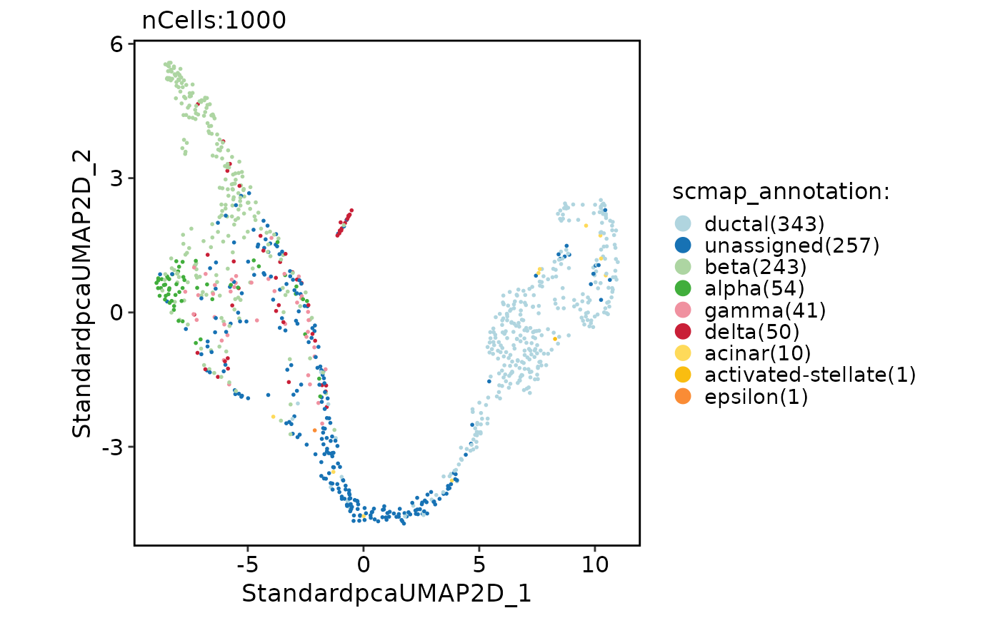
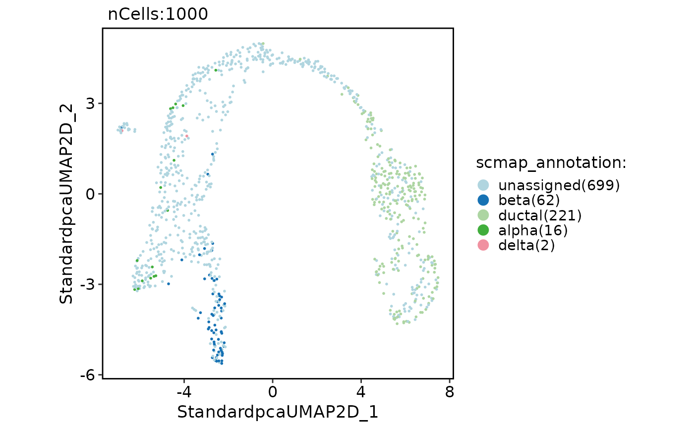

Annotate single cells using scmap.
RunScmap(
srt_query,
srt_ref,
ref_group = NULL,
query_assay = "RNA",
ref_assay = "RNA",
method = "scmapCluster",
nfeatures = 500,
threshold = 0.5,
k = 10
)An object of class Seurat to be annotated with cell types.
An object of class Seurat storing the reference cells.
A character vector specifying the column name in the `srt_ref` metadata that represents the cell grouping.
A character vector specifying the assay to be used for the query data. Defaults to the default assay of the `srt_query` object.
A character vector specifying the assay to be used for the reference data. Defaults to the default assay of the `srt_ref` object.
The method to be used for scmap analysis. Can be any of "scmapCluster" or "scmapCell". The default value is "scmapCluster".
The number of top features to be selected. The default value is 500.
The threshold value on similarity to determine if a cell is assigned to a cluster. This should be a value between 0 and 1. The default value is 0.5.
Number of clusters per group for k-means clustering when method is "scmapCell".
data("panc8_sub")
# Simply convert genes from human to mouse and preprocess the data
genenames <- make.unique(capitalize(rownames(panc8_sub), force_tolower = TRUE))
panc8_sub <- RenameFeatures(panc8_sub, newnames = genenames)
#> Rename features for the assay: RNA
panc8_sub <- check_srtMerge(panc8_sub, batch = "tech")[["srtMerge"]]
#> [2024-11-18 15:50:55.792977] Spliting srtMerge into srtList by column tech... ...
#> [2024-11-18 15:50:55.891456] Checking srtList... ...
#> Data 1/5 of the srtList is raw_normalized_counts. Perform NormalizeData(LogNormalize) on the data ...
#> Perform FindVariableFeatures on the data 1/5 of the srtList...
#> Data 2/5 of the srtList is raw_normalized_counts. Perform NormalizeData(LogNormalize) on the data ...
#> Perform FindVariableFeatures on the data 2/5 of the srtList...
#> Data 3/5 of the srtList is raw_normalized_counts. Perform NormalizeData(LogNormalize) on the data ...
#> Perform FindVariableFeatures on the data 3/5 of the srtList...
#> Data 4/5 of the srtList is raw_counts. Perform NormalizeData(LogNormalize) on the data ...
#> Perform FindVariableFeatures on the data 4/5 of the srtList...
#> Data 5/5 of the srtList is raw_counts. Perform NormalizeData(LogNormalize) on the data ...
#> Perform FindVariableFeatures on the data 5/5 of the srtList...
#> Use the separate HVF from srtList...
#> Number of available HVF: 2000
#> [2024-11-18 15:50:58.116692] Finished checking.
# Annotation
data("pancreas_sub")
pancreas_sub <- Standard_scop(pancreas_sub)
#> [2024-11-18 15:50:58.986342] Start Standard_scop
#> [2024-11-18 15:50:58.986431] Checking srtList... ...
#> Data 1/1 of the srtList is raw_counts. Perform NormalizeData(LogNormalize) on the data ...
#> Perform FindVariableFeatures on the data 1/1 of the srtList...
#> Use the separate HVF from srtList...
#> Number of available HVF: 2000
#> [2024-11-18 15:50:59.752105] Finished checking.
#> [2024-11-18 15:50:59.752164] Perform ScaleData on the data...
#> [2024-11-18 15:51:00.212784] Perform linear dimension reduction (pca) on the data...
#> Warning: The following arguments are not used: force.recalc
#> Warning: The following arguments are not used: force.recalc
#> [2024-11-18 15:51:01.375866] Perform FindClusters (louvain) on the data...
#> [2024-11-18 15:51:01.417654] Reorder clusters...
#> [2024-11-18 15:51:01.442584] Perform nonlinear dimension reduction (umap) on the data...
#> Non-linear dimensionality reduction(umap) using Reduction(Standardpca, dims:1-13) as input
#> Found more than one class "dist" in cache; using the first, from namespace 'BiocGenerics'
#> Also defined by ‘spam’
#> Found more than one class "dist" in cache; using the first, from namespace 'BiocGenerics'
#> Also defined by ‘spam’
#> Non-linear dimensionality reduction(umap) using Reduction(Standardpca, dims:1-13) as input
#> Found more than one class "dist" in cache; using the first, from namespace 'BiocGenerics'
#> Also defined by ‘spam’
#> Found more than one class "dist" in cache; using the first, from namespace 'BiocGenerics'
#> Also defined by ‘spam’
#> [2024-11-18 15:51:05.180711] Standard_scop done
#> Elapsed time: 6.19 secs
pancreas_sub <- RunScmap(
srt_query = pancreas_sub, srt_ref = panc8_sub,
ref_group = "celltype", method = "scmapCluster"
)
#> Install package: "scmap" ...
#> 'getOption("repos")' replaces Bioconductor standard repositories, see 'help("repositories", package = "BiocManager")'
#> for details.
#> Replacement repositories:
#> CRAN: https://cloud.r-project.org
#> Bioconductor version 3.18 (BiocManager 1.30.23), R 4.3.2 (2023-10-31)
#> Installing package(s) 'scmap'
#> also installing the dependencies ‘googleVis’, ‘randomForest’
#>
#> The downloaded binary packages are in
#> /var/folders/rv/3jnfbs0d6r7d0c5bfj7ft5k00000gn/T//RtmpAC8Cie/downloaded_packages
#> Detected srt_query data type: log_normalized_counts
#> Detected srt_ref data type: log_normalized_counts
#> Perform selectFeatures on the data...
#> Perform indexCluster on the data...
#> Perform scmapCluster on the data...
#> Warning: Features Adcyap1, Cfc1, Col6a2, Col6a3, Crp, Ctrc, Gsta1, Lcn2, Loxl4, Mafa, Mt-atp6, Mt-co1, Mt-co2, Mt-co3, Mt-nd1, Mt-nd2, Mt-nd4, Mt-nd4l, Mt-nd5, Muc13, Serpina5, Tacstd2 are not present in the 'SCESet' object and therefore were not set.
CellDimPlot(pancreas_sub, group.by = "scmap_annotation")
#> Warning: No shared levels found between `names(values)` of the manual scale and the data's fill values.

pancreas_sub <- RunScmap(
srt_query = pancreas_sub, srt_ref = panc8_sub,
ref_group = "celltype", method = "scmapCell"
)
#> Detected srt_query data type: log_normalized_counts
#> Detected srt_ref data type: log_normalized_counts
#> Perform selectFeatures on the data...
#> Perform indexCell on the data...
#> Perform scmapCell on the data...
#> Perform scmapCell2Cluster on the data...
CellDimPlot(pancreas_sub, group.by = "scmap_annotation")
#> Warning: No shared levels found between `names(values)` of the manual scale and the data's fill values.
